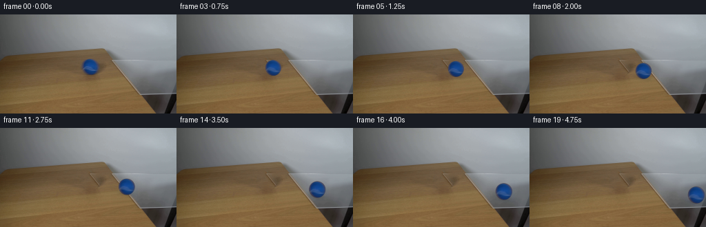
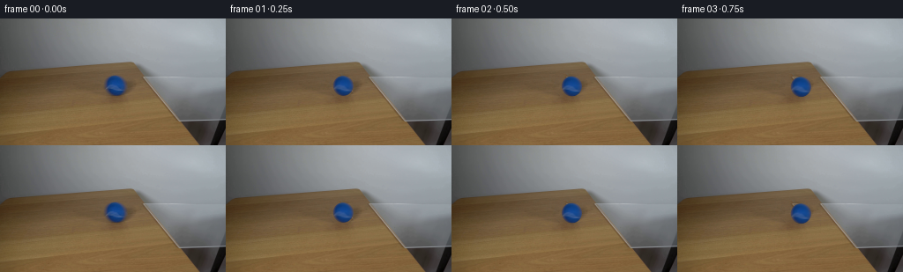

CODING AGENTS AS PIXEL WORLD MODELS
traex/DeepSeek-V4.1-Flash · 0025
点击播放 · 原生 RGB 像素
逐轮保存的候选
回放视频、检查图与代码变化。
每份候选均可单独播放。实际图片检查记录在下方工具轨迹中。
候选 01播放与检查图
点击播放 · 原生 RGB 像素


展开代码变化
--- 上一保存版本
+++ 本次保存版本
@@ -0,0 +1,190 @@
+from pathlib import Path
+
+import cv2
+import numpy as np
+from PIL import Image
+
+import artifact_io
+
+
+ROOT = Path(__file__).resolve().parent
+FRAME_COUNT = 20
+HEIGHT = 144
+WIDTH = 256
+
+BALL_X = 131.0
+BALL_Y = 76.0
+BALL_RADIUS = 11.9
+
+# The pane's visible quadrilateral in the opening frame.
+GLASS_POLYGON = np.array(
+ [[149.0, 48.5], [256.0, 66.0], [256.0, 116.5], [202.5, 116.5]],
+ dtype=np.float32,
+)
+
+
+def make_clean_plate(frame):
+ """Remove the opening ball while preserving the table's horizontal grain."""
+ mask = np.zeros((HEIGHT, WIDTH), dtype=np.uint8)
+ cv2.ellipse(
+ mask,
+ (int(round(BALL_X)), int(round(BALL_Y))),
+ (14, 14),
+ 0,
+ 0,
+ 360,
+ 255,
+ -1,
+ )
+ inpainted = cv2.inpaint(frame, mask, 4.0, cv2.INPAINT_TELEA).astype(np.float32)
+
+ # A shifted high-frequency sample restores fine wood grain lost to inpainting.
+ shifted = np.roll(frame.astype(np.float32), -32, axis=1)
+ shifted_blur = cv2.GaussianBlur(shifted, (0, 0), 2.2)
+ grain = (shifted - shifted_blur) * 0.72
+ soft_mask = cv2.GaussianBlur(mask.astype(np.float32) / 255.0, (0, 0), 1.2)
+ clean = inpainted + grain * soft_mask[:, :, None]
+ return np.clip(clean, 0, 255).astype(np.uint8)
+
+
+def smoothstep(edge0, edge1, value):
+ value = np.clip((value - edge0) / (edge1 - edge0), 0.0, 1.0)
+ return value * value * (3.0 - 2.0 * value)
+
+
+def composite_ball(frame, source, cx, cy, scale):
+ """Resample the measured ball appearance and composite it with a soft edge."""
+ reach = int(np.ceil((BALL_RADIUS + 2.0) * scale))
+ x0 = max(0, int(np.floor(cx)) - reach)
+ x1 = min(WIDTH, int(np.ceil(cx)) + reach + 1)
+ y0 = max(0, int(np.floor(cy)) - reach)
+ y1 = min(HEIGHT, int(np.ceil(cy)) + reach + 1)
+ if x0 >= x1 or y0 >= y1:
+ return frame
+
+ yy, xx = np.mgrid[y0:y1, x0:x1].astype(np.float32)
+ local_x = (xx + 0.5 - cx) / scale
+ local_y = (yy + 0.5 - cy) / scale
+ map_x = (BALL_X + local_x - 0.5).astype(np.float32)
+ map_y = (BALL_Y + local_y - 0.5).astype(np.float32)
+ sampled = cv2.remap(
+ source,
+ map_x,
+ map_y,
+ interpolation=cv2.INTER_LINEAR,
+ borderMode=cv2.BORDER_REFLECT_101,
+ )
+
+ radius = np.hypot(local_x, local_y)
+ alpha = 1.0 - smoothstep(BALL_RADIUS - 1.0, BALL_RADIUS + 0.15, radius)
+
+ # One-pixel exposure smear gives the ball a restrained real-camera edge.
+ if scale > 1.01:
+ shifted = np.roll(sampled, 1, axis=1)
+ sampled = sampled.astype(np.float32) * 0.88 + shifted.astype(np.float32) * 0.12
+
+ roi = frame[y0:y1, x0:x1].astype(np.float32)
+ blended = roi * (1.0 - alpha[:, :, None]) + sampled * alpha[:, :, None]
+ frame[y0:y1, x0:x1] = np.clip(blended, 0, 255).astype(np.uint8)
+ return frame
+
+
+def add_contact_shadow(frame, cx, cy, scale, strength):
+ """Add a soft, slightly elongated shadow aligned with the table direction."""
+ pad = int(22 * scale)
+ x0 = max(0, int(cx) - pad)
+ x1 = min(WIDTH, int(cx) + pad + 1)
+ y0 = max(0, int(cy) - pad)
+ y1 = min(HEIGHT, int(cy) + pad + 1)
+ if x0 >= x1 or y0 >= y1:
+ return frame
+
+ yy, xx = np.mgrid[y0:y1, x0:x1].astype(np.float32)
+ angle = np.deg2rad(10.0)
+ dx = xx - (cx - 1.3 * scale)
+ dy = yy - (cy + 9.2 * scale)
+ u = np.cos(angle) * dx + np.sin(angle) * dy
+ v = -np.sin(angle) * dx + np.cos(angle) * dy
+ broad = np.exp(-0.5 * ((u / (8.2 * scale)) ** 2 + (v / (2.7 * scale)) ** 2))
+ contact = np.exp(-0.5 * ((u / (5.0 * scale)) ** 2 + (v / (1.55 * scale)) ** 2))
+ shadow = np.clip(0.17 * broad + 0.13 * contact, 0.0, 0.28) * strength
+
+ roi = frame[y0:y1, x0:x1].astype(np.float32)
+ # Cool, neutral darkening reads correctly on both wood and clear glass.
+ shaded = roi * (1.0 - shadow[:, :, None]) + np.array([46.0, 47.0, 48.0]) * shadow[:, :, None]
+ frame[y0:y1, x0:x1] = np.clip(shaded, 0, 255).astype(np.uint8)
+ return frame
+
+
+def add_glass_tint(frame, cx, cy, scale, amount):
+ """A faint transmitted blue pool indicates the ball is moving over glass."""
+ if amount <= 0.0:
+ return frame
+
+ pad = int(16 * scale)
+ x0 = max(0, int(cx) - pad)
+ x1 = min(WIDTH, int(cx) + pad + 1)
+ y0 = max(0, int(cy) - pad)
+ y1 = min(HEIGHT, int(cy) + pad + 1)
+ if x0 >= x1 or y0 >= y1:
+ return frame
+
+ yy, xx = np.mgrid[y0:y1, x0:x1].astype(np.float32)
+ dx = (xx - (cx + 1.5 * scale)) / (8.8 * scale)
+ dy = (yy - (cy + 5.3 * scale)) / (5.2 * scale)
+ glow = np.exp(-0.5 * (dx * dx + dy * dy)) * amount
+
+ local_mask = np.zeros((y1 - y0, x1 - x0), dtype=np.uint8)
+ shifted_polygon = GLASS_POLYGON - np.array([x0, y0], dtype=np.float32)
+ cv2.fillPoly(local_mask, [np.round(shifted_polygon).astype(np.int32)], 255)
+ local_mask = cv2.GaussianBlur(local_mask.astype(np.float32) / 255.0, (0, 0), 1.0)
+ alpha = glow * local_mask
+
+ roi = frame[y0:y1, x0:x1].astype(np.float32)
+ tint = np.array([58.0, 102.0, 151.0], dtype=np.float32)
+ frame[y0:y1, x0:x1] = np.clip(
+ roi * (1.0 - alpha[:, :, None]) + tint * alpha[:, :, None], 0, 255
+ ).astype(np.uint8)
+ return frame
+
+
+def ball_state(index):
+ u = index / (FRAME_COUNT - 1)
+ travel = 0.13 * u + 0.87 * (u**1.42)
+ cx = BALL_X + 111.0 * travel
+ dx = cx - BALL_X
+ cy = BALL_Y + 0.168 * dx + 0.00022 * dx * dx
+ scale = 1.0 + 0.078 * travel
+ return cx, cy, scale
+
+
+def point_in_glass(x, y):
+ return cv2.pointPolygonTest(GLASS_POLYGON, (float(x), float(y)), False) >= 0
+
+
+def generate():
+ opening = np.asarray(Image.open(ROOT / "first_frame.png").convert("RGB"), dtype=np.uint8)
+ if opening.shape != (HEIGHT, WIDTH, 3):
+ raise ValueError(f"Unexpected first-frame shape: {opening.shape}")
+
+ clean = make_clean_plate(opening)
+ frames = np.empty((FRAME_COUNT, HEIGHT, WIDTH, 3), dtype=np.uint8)
+ frames[0] = opening
+
+ for index in range(1, FRAME_COUNT):
+ cx, cy, scale = ball_state(index)
+ frame = clean.copy()
+ shadow_strength = min(1.0, 0.35 + index / 7.0)
+ frame = add_contact_shadow(frame, cx, cy, scale, shadow_strength)
+
+ glass_amount = 0.13 if point_in_glass(cx + 5.0, cy + 3.0) else 0.0
+ frame = add_glass_tint(frame, cx, cy, scale, glass_amount)
+ frame = composite_ball(frame, opening, cx, cy, scale)
+ frames[index] = frame
+
+ artifact_io.save(frames, ROOT)
+ return frames
+
+
+if __name__ == "__main__":
+ generate()
可观测工具轨迹
实际执行的命令与返回图片。
命令 1exit 0
/bin/bash -c "pwd && rg --files -g '"'!*'"\\.git*' | sort"
命令 2exit 0
/bin/bash -c "sed -n '1,240p' prompt.txt"
命令 3exit 0
/bin/bash -c "sed -n '1,280p' GENERATION_RULES.md"
命令 4exit 0
/bin/bash -c 'file first_frame.png && identify first_frame.png 2>/dev/null || true && ls -lah'
命令 5exit 0
/bin/bash -c "sed -n '1,260p' artifact_io.py"
命令 6exit 0
/bin/bash -c "python - <<'PY'
from PIL import Image
import numpy as np
im=Image.open('first_frame.png').convert('RGB')
a=np.asarray(im)
print('size', im.size, 'dtype', a.dtype, 'minmax', a.min(axis=(0,1)), a.max(axis=(0,1)))
# quantized most common colors
q=(a//16)*16
u,c=np.unique(q.reshape(-1,3),axis=0,return_counts=True)
for i in np.argsort(c)[-30:][::-1]: print(tuple(u[i]), int(c[i]))
# grid mean colors 16x9
h,w,_=a.shape
for gy in range(9):
row=[]
for gx in range(16):
tile=a[gy*h//9:(gy+1)*h//9,gx*w//16:(gx+1)*w//16]
m=tile.mean((0,1)).astype(int)
row.append('%02x%02x%02x'%tuple(m))
print(' '.join(row))
PY"命令 7exit 0
/bin/bash -c "python - <<'PY'
from PIL import Image
import numpy as np
a=np.asarray(Image.open('first_frame.png').convert('RGB')).astype(int)
r,g,b=a[:,:,0],a[:,:,1],a[:,:,2]
for name,m in [
('blue', (b-r>20)&(b-g>5)&(b>70)),
('cyan',(b-r>12)&(g-r>8)),
('strongblue',(b-r>35)&(b-g>15)&(b>70)),
('dark',(a.max(2)<60)),
('brown',(r>g+8)&(g>b+8)&(r>50)),
('white',(a.min(2)>140)),
]:
ys,xs=np.where(m)
print(name, len(xs), 'bbox', (xs.min(),ys.min(),xs.max(),ys.max()) if len(xs) else None)
# row/col peaks
if len(xs):
ux,cx=np.unique(xs,return_counts=True); uy,cy=np.unique(ys,return_counts=True)
print(' x peaks', sorted(zip(cx,ux),reverse=True)[:8], 'y peaks',sorted(zip(cy,uy),reverse=True)[:8])
PY"命令 8exit 0
/bin/bash -c "python - <<'PY'
try:
import cv2; print('cv2',cv2.__version__)
except Exception as e: print('no cv2',e)
try:
import scipy; print('scipy',scipy.__version__)
except Exception as e: print('no scipy',e)
PY"命令 9exit 0
/bin/bash -c "python - <<'PY'
from PIL import Image
import numpy as np
from scipy import ndimage as ndi
a=np.asarray(Image.open('first_frame.png').convert('RGB')).astype(float)
# blue mask around ball
r,g,b=a.transpose(2,0,1)
m=(b-r>25)&(b-g>7)&(b>60)
lab,n=ndi.label(m)
for i in range(1,n+1):
ys,xs=np.where(lab==i)
if len(xs)>20:
print(i,len(xs),(xs.min(),ys.min(),xs.max(),ys.max()),(xs.mean(),ys.mean()))
# detect circular edges in relevant center area
gray=cv2.cvtColor(a.astype('uint8'), cv2.COLOR_RGB2GRAY) if False else None
PY"命令 10exit 0
/bin/bash -c "python - <<'PY'
from PIL import Image
import numpy as np
a=np.asarray(Image.open('first_frame.png').convert('RGB'))
for y in range(58,96):
s=''
for x in range(105,160):
r,g,b=map(int,a[y,x])
if b-r>25 and b-g>7 and b>60: ch='B'
elif b-r>12 and g-r>5: ch='c'
elif max(r,g,b)<60: ch='#'
elif r>g+10 and g>b+10: ch='w'
elif min(r,g,b)>140: ch=' '
else: ch='.'
s+=ch
print(f'{y:03d} {s}')
PY"命令 11exit 0
/bin/bash -c "python - <<'PY'
from PIL import Image
import numpy as np
a=np.asarray(Image.open('first_frame.png').convert('RGB')).astype(int)
# print color rows around glass/top and table edge x 0..255 every 4
for y in [48,50,52,55,58,60,62,64,70,80,90,95,100,104,106,108,110,112,115,118,120,125,130,135,140,143]:
vals=[]
for x in range(0,256,8):
r,g,b=a[y,x]; vals.append('%02x%02x%02x'%(r,g,b))
print(y,' '.join(vals))
PY"命令 12exit 0
/bin/bash -c "python - <<'PY'
import cv2, numpy as np
from PIL import Image
a=np.asarray(Image.open('first_frame.png').convert('RGB'))
g=cv2.cvtColor(a,cv2.COLOR_RGB2GRAY)
for lo,hi in [(10,30),(20,50),(30,80)]:
e=cv2.Canny(g,lo,hi)
lines=cv2.HoughLinesP(e,1,np.pi/180,threshold=18,minLineLength=18,maxLineGap=4)
print('\\nCanny',lo,hi,'n',len(e.nonzero()[0]),'lines', None if lines is None else len(lines))
if lines is not None:
for l in sorted(lines[:,0,:].tolist(), key=lambda z: -((z[2]-z[0])**2+(z[3]-z[1])**2))[:30]:
x1,y1,x2,y2=l; print((x1,y1,x2,y2),'len',round(((x2-x1)**2+(y2-y1)**2)**.5,1))
PY"命令 13exit 0
/bin/bash -c "python - <<'PY'
import cv2, numpy as np
from PIL import Image
a=np.asarray(Image.open('first_frame.png').convert('RGB'))
# kmeans colors
pix=a.reshape(-1,3).astype(np.float32)
crit=(cv2.TERM_CRITERIA_EPS+cv2.TERM_CRITERIA_MAX_ITER,50,.3)
_,lab,cen=cv2.kmeans(pix,14,None,crit,8,cv2.KMEANS_PP_CENTERS)
lab=lab.reshape(a.shape[:2]); cen=cen.astype(int)
print('clusters:')
for i in np.argsort(cen.mean(1)):
m=lab==i; ys,xs=np.where(m)
print(i,'rgb',tuple(cen[i]),'n',int(m.sum()),'bbox',(int(xs.min()),int(ys.min()),int(xs.max()),int(ys.max())),'centroid',(round(xs.mean(),1),round(ys.mean(),1)))
# chars at 4x4 block based on cluster id
chars='0123456789ABCD'
print('\\ncluster map 64x36:')
for y in range(0,144,4):
s=''
for x in range(0,256,4):
vals=lab[y:y+4,x:x+4].ravel(); s+=chars[np.bincount(vals,minlength=14).argmax()]
print(s)
PY"命令 14exit 0
/bin/bash -c "python - <<'PY'
from PIL import Image
import numpy as np
a=np.asarray(Image.open('first_frame.png').convert('RGB')).astype(int)
# table horizon per x using chroma r-b / brightness
print('x y color around horizon')
for x in range(0,256,8):
# find biggest drop in gray brightness between y 45..130? list line-ish
vals=[]
for y in range(45,130):
r,g,b=a[y,x]
if (r-b)>14 and r>60:
vals.append(y)
print(x, min(vals) if vals else None, max(vals) if vals else None, a[70,x], a[110,x])
PY"命令 15exit 0
/bin/bash -c "python - <<'PY'
from PIL import Image
import numpy as np
a=np.asarray(Image.open('first_frame.png').convert('RGB')).astype(int)
# print x 105..220 y 44..122 with color categories / luma chars
chars='@%#*+=-:. '
for y in range(42,124,2):
s=''
for x in range(104,226,2):
r,g,b=a[y,x]; lum=(.3*r+.59*g+.11*b)
# colored glass: blue tint / gray? table brown
if b-r>25 and b-g>7: ch='B'
elif r-b>10 and r>50: ch='T'
elif b-r>3 and b>90: ch='g'
elif max(r,g,b)<70: ch='K'
else:
ch=chars[min(9,int(lum/255*10))]
s+=ch
print(f'{y:03d} {s}')
PY"命令 16exit 0
/bin/bash -c "python - <<'PY'
from PIL import Image
import numpy as np
a=np.asarray(Image.open('first_frame.png').convert('RGB')).astype(float)
# detect gray region in x 90:230, y 45:120 based saturation low and brightness>80
mx=a.max(2); mn=a.min(2); sat=mx-mn
m=(sat<16)&(mx>75)
# print binary map each 2 pix
for y in range(44,122,2):
s=''
for x in range(90,236,2):
s+= '#' if m[y,x] else ' '
print(f'{y:03d} {s}')
PY"命令 17exit 0
/bin/bash -c "python - <<'PY'
import cv2, numpy as np
from PIL import Image
a=np.asarray(Image.open('first_frame.png').convert('RGB'))
g=cv2.cvtColor(a,cv2.COLOR_RGB2GRAY)
e=cv2.Canny(g,10,30)
for y in range(42,122,2):
s=''
for x in range(90,238,2):
s+= '#' if e[y:y+2,x:x+2].any() else ' '
print(f'{y:03d} {s}')
PY"命令 18exit 0
/bin/bash -c "python - <<'PY'
from PIL import Image
import numpy as np
a=np.asarray(Image.open('first_frame.png').convert('RGB')).astype(int)
# print exact RGB grid x 115..215 y 50..105 at every 5/2 maybe categorize by nearest named
for y in range(50,106,3):
print('\\ny',y)
for x in range(118,211,4):
print(f'{x}:{a[y,x,0]:02x}{a[y,x,1]:02x}{a[y,x,2]:02x}',end=' ')
print()
PY"命令 19exit 0
/bin/bash -c "python - <<'PY'
import cv2,numpy as np
from PIL import Image
a=np.asarray(Image.open('first_frame.png').convert('RGB'))
g=cv2.cvtColor(a,cv2.COLOR_RGB2GRAY).astype(np.float32)
gx=cv2.Sobel(g,cv2.CV_32F,1,0,ksize=3); gy=cv2.Sobel(g,cv2.CV_32F,0,1,ksize=3)
mag=np.hypot(gx,gy); ang=(np.degrees(np.arctan2(gy,gx))+180)%180
# map gradients, symbols by orientation
for y in range(42,125,2):
s=''
for x in range(100,235,2):
# max in 2x2
m=mag[y:y+2,x:x+2].max()
if m<35: ch=' '
elif m<70: ch='.'
elif m<120: ch='+'
else: ch='#'
# overlay blue ball
r,gg,b=map(int,a[y,x])
if b-r>25 and b-gg>7: ch='B'
s+=ch
print(f'{y:03d} {s}')
print('gradient orientation strong map: | / \\\\ -')
for y in range(42,125,3):
s=''
for x in range(100,235,2):
idx=np.unravel_index(np.argmax(mag[y:y+3,x:x+2]), (3,2)); m=mag[y+idx[0],x+idx[1]]
if m<90: s+=' '
else:
an=ang[y+idx[0],x+idx[1]]
if an<22.5 or an>=157.5: c='|'
elif an<67.5: c='/'
elif an<112.5: c='-'
else: c='\\\\'
s+=c
print(f'{y:03d} {s}')
PY"命令 20exit 0
/bin/bash -c "python - <<'PY'
from PIL import Image
import numpy as np
a=np.asarray(Image.open('first_frame.png').convert('RGB')).astype(int)
# chroma r-b map: brown positive, gray ~0, blue negative
chars='0123456789ABCDEFGHIJKLMNOPQRSTUVWXYZ'
for y in range(45,130,2):
s=''
for x in range(120,256,2):
r,g,b=a[y,x]
d=r-b
# 0-64 quantize
i=np.clip(int((d+32)//4),0,35)
s+=chars[i]
print(f'{y:03d} {s}')
PY"命令 21exit 0
/bin/bash -c "python - <<'PY'
from PIL import Image
import numpy as np
a=np.asarray(Image.open('first_frame.png').convert('RGB')).astype(int)
# pixel patch actual coordinates, chars based saturation/color
for y in range(60,96):
s=''
for x in range(112,225):
r,g,b=a[y,x]
if b-r>25 and b-g>7: ch='B'
elif r-b>20: ch='T'
elif max(r,g,b)<60: ch='#'
elif max(r,g,b)-min(r,g,b)<10 and max(r,g,b)>100: ch=' '
elif b>g and b>r: ch='g'
else: ch='.'
s+=ch
print(f'{y:03d} {s}')
PY"命令 22exit 0
/bin/bash -c "python - <<'PY'
from PIL import Image
import numpy as np
a=np.asarray(Image.open('first_frame.png').convert('RGB')).astype(int)
# print lines at right: where gray changes? r-b per x y
for y in [64,66,68,70,72,74,76,78,80,82,84,86,88,90,92,94,96,98,100,102,104,106,108,110,112,114,116,118,120,122,124,126,130,135,140,143]:
print('\\ny',y)
for x in range(145,256,5):
r,g,b=a[y,x]
print(f'{x}:{r:02x}{g:02x}{b:02x}',end=' ')
print()
PY"命令 23exit 0
/bin/bash -c "python - <<'PY'
from PIL import Image
import numpy as np
a=np.asarray(Image.open('first_frame.png').convert('RGB')).astype(int)
for y in range(62,90):
s=''
for x in range(117,146):
r,g,b=a[y,x]
# classify
if b-r<20 and max(r,g,b)<100: c='.'
elif b-r<25: c='d'
elif b<80: c='b'
elif b<110: c='B'
elif b<140: c='C'
elif b<170: c='L'
elif r>80 and g>80: c='W'
else: c='w'
s+=c
print(f'{y:03d} {s}')
print('RGB rows:')
for y in range(65,88,2):
print(y, ' '.join(f'{r:02x}{g:02x}{b:02x}' for r,g,b in a[y,119:145]))
PY"命令 24exit 0
/bin/bash -c "python - <<'PY'
from PIL import Image
import numpy as np, cv2
a=np.asarray(Image.open('first_frame.png').convert('RGB'))
g=cv2.cvtColor(a,cv2.COLOR_RGB2GRAY).astype(np.float32)
gx=cv2.Sobel(g,cv2.CV_32F,1,0,ksize=3); gy=cv2.Sobel(g,cv2.CV_32F,0,1,ksize=3)
mag=np.hypot(gx,gy); ang=(np.degrees(np.arctan2(gy,gx))+180)%180
# ASCII 1 pixel x145-230 y50-130 using orientation for >60 and magnitude intensity
for y in range(50,130):
s=''
for x in range(140,231):
m=mag[y,x]
if m<30: c=' '
elif m<55: c='.'
elif m<90: c='+'
else:
an=ang[y,x]
if an<22.5 or an>=157.5:c='|'
elif an<67.5:c='/'
elif an<112.5:c='-'
else:c='\\\\'
s+=c
print(f'{y:03d} {s}')
PY"命令 25exit 0
/bin/bash -c "python - <<'PY'
import numpy as np
from PIL import Image
a=np.asarray(Image.open('first_frame.png').convert('RGB')).astype(float)
r,g,b=a.transpose(2,0,1)
# derive table horizon top boundary based r-b>18 and smooth
hor=[]
for x in range(256):
ys=np.where((r[:,x]-b[:,x]>18)&(r[:,x]>55))[0]
hor.append(ys.min() if len(ys) else 143)
# smooth polynomial segments and print samples
for x in range(0,256,4): print(x,hor[x])
PY"命令 26exit 0
/bin/bash -c "python - <<'PY'
from PIL import Image
import numpy as np
a=np.asarray(Image.open('first_frame.png').convert('RGB')).astype(int)
for y in range(45,75):
# x coords where r-b >10 in right 90:255
xs=np.where((a[y,90:,0]-a[y,90:,2]>10)&(a[y,90:,0]>55))[0]+90
# runs
runs=[]
if len(xs):
sp=np.split(xs,np.where(np.diff(xs)>1)[0]+1); runs=[(int(z[0]),int(z[-1])) for z in sp if len(z)>1]
print(y,runs)
PY"命令 27exit 0
/bin/bash -c "python - <<'PY'
import numpy as np
from PIL import Image
a=np.asarray(Image.open('first_frame.png').convert('RGB')).astype(float)
r,g,b=a.transpose(2,0,1)
for y in [115,116,117,118,119,120]:
print('y',y)
for x in range(190,256,4):
print(x, tuple(a[y,x].astype(int)), end='; ')
print()
PY"命令 28exit 0
/bin/bash -c "python - <<'PY'
from PIL import Image
import numpy as np
a=np.asarray(Image.open('first_frame.png').convert('RGB')).astype(int)
for y in range(45,120):
# glass line means light gray outside table and relatively neutral: find rightmost x whose r-b <10 and max > 70; but table right boundary
row=a[y]
xs=np.where((row[:,0]-row[:,2]<8)&(row.max(1)>70))[0]
# contiguous from x>150 ending at gap
runs=[]
if len(xs):
sp=np.split(xs,np.where(np.diff(xs)>1)[0]+1); runs=[(int(z[0]),int(z[-1])) for z in sp if len(z)>3]
print(y,runs[-2:])
PY"命令 29exit 0
/bin/bash -c "python - <<'PY'
import numpy as np
from PIL import Image
a=np.asarray(Image.open('first_frame.png').convert('RGB')).astype(float)
for y in [49,50,52,55,58,60,62,64,65,66,68,70,75,80,90,100,110,115,116,117,118]:
print('\\ny',y)
for x in range(85,226,4):
r,g,b=a[y,x]
print(f'{x}:{r:.0f},{g:.0f},{b:.0f}',end=' ')
print()
PY"命令 30exit 0
/bin/bash -c "python - <<'PY'
from PIL import Image
import numpy as np
a=np.asarray(Image.open('first_frame.png').convert('RGB')).astype(float)
# pixel dimensions with strongest gray/brown transition: classify pixel by brown score r-b, print x boundary where right side neutral
for y in range(45,125):
row=a[y]
# classify table-brown where r-b > 20; scan from x=250 left until brownish run
xs=np.where(row[:,0]-row[:,2]>20)[0]
last=xs.max() if len(xs) else -1
print(y,last,end='; ')
if y%5==4:print()
PY"命令 31exit 0
/bin/bash -c "python - <<'PY'
from PIL import Image
import numpy as np
a=np.asarray(Image.open('first_frame.png').convert('RGB')).astype(float)
# chroma blue score and ball samples
for y in range(63,90,2):
print(y,end=': ')
for x in range(117,146,2):
r,g,b=a[y,x]; score=b-(r+g)/2
print(f'{score:5.1f}',end=' ')
print()
# sample centers
print('center-ish samples')
for y,x in [(70,128),(72,132),(75,130),(78,134),(80,128),(74,125),(74,137),(68,132),(82,132),(86,131),(75,120),(75,142)]:
print((x,y),tuple(a[y,x].astype(int)))
PY"命令 32exit 0
/bin/bash -c "python - <<'PY'
import cv2, numpy as np
from PIL import Image
a=np.asarray(Image.open('first_frame.png').convert('RGB'))
g=cv2.cvtColor(a,cv2.COLOR_RGB2GRAY)
# line segment detector
lsd=cv2.createLineSegmentDetector(cv2.LSD_REFINE_STD)
lines,widths,prec,nfa=lsd.detect(g)
out=[]
for i,l in enumerate(lines[:,0,:]):
x1,y1,x2,y2=map(float,l); length=((x2-x1)**2+(y2-y1)**2)**.5
if length>=12:
ang=np.degrees(np.arctan2(y2-y1,x2-x1))%180
out.append((length,ang,x1,y1,x2,y2, widths[i,0] if widths is not None else 0))
for l in sorted(out,reverse=True)[:100]:
print('len=%5.1f ang=%5.1f (%5.1f,%5.1f)-(%5.1f,%5.1f) w=%.1f'%l)
PY"命令 33exit 0
/bin/bash -c "python - <<'PY'
from PIL import Image
import numpy as np
a=np.asarray(Image.open('first_frame.png').convert('RGB')).astype(float)
chars=' .:-=+*#%@'
for y in range(62,90):
s=''
for x in range(116,147):
r,g,b=a[y,x]
# emphasize blue score and lum
if b-(r+g)/2<15: c=' '
else:
lum=.3*r+.59*g+.11*b
c=chars[min(9,int(lum/150*9))]
s+=c
print(f'{y:03d} {s}')
print('\\nHue/chroma map b-r')
for y in range(63,89):
s=''
for x in range(117,146):
r,g,b=a[y,x]; d=b-r
c=' ' if d<10 else str(min(9,int(d/18)))
s+=c
print(f'{y:03d} {s}')
PY"命令 34exit 0
/bin/bash -c "python - <<'PY'
import numpy as np
from PIL import Image
a=np.asarray(Image.open('first_frame.png').convert('RGB')).astype(int)
for y in [66,70,75,80,85,90,95,100,105,110,115]:
print('\\n',y)
for x in [156,157,158,159,160,161,162,163,164,165,166,167,168,169,170,171,172,173,174,175,176,177,178,179,180]:
print('%02x%02x%02x'%tuple(a[y,x]),end=' ')
print()
PY"命令 35exit 0
/bin/bash -c "python - <<'PY'
import numpy as np
from PIL import Image
a=np.asarray(Image.open('first_frame.png').convert('RGB')).astype(int)
# Find exact table-left/glass boundary using row differences, print largest horizontal jumps in y 50-120 x 140-220
for y in range(50,120,5):
d=np.abs(np.diff(a[y,:,0].astype(int)))+np.abs(np.diff(a[y,:,1].astype(int)))+np.abs(np.diff(a[y,:,2].astype(int)))
ix=np.argsort(d[140:220])[-8:]+140
print(y, sorted([(int(x),int(d[x])) for x in ix], key=lambda z:z[0]))
PY"命令 36exit 0
/bin/bash -c "python - <<'PY'
import numpy as np
from PIL import Image
a=np.asarray(Image.open('first_frame.png').convert('RGB')).astype(int)
for y in [60,65,70,75,80,85,90,95,100,105,110,115]:
print('\\n',y)
for x in range(145,181):
r,g,b=a[y,x]
# classify top glass region gray neutral
c=' '
if r-b<10 and max(r,g,b)>70: c='#'
if b-r>12: c='B'
print(c,end='')
print('')
PY"命令 37exit 0
/bin/bash -c "python - <<'PY'
from PIL import Image
import numpy as np
a=np.asarray(Image.open('first_frame.png').convert('RGB')).astype(float)
# region means table and wall
regions={'wall':a[20:45,170:230],'table':a[125:143,20:100],'glass_top':a[55:62,175:230],'glass_mid':a[70:85,175:230],'right_bottom':a[120:143,210:240]}
for k,v in regions.items(): print(k,v.mean((0,1)),np.median(v.reshape(-1,3),axis=0),v.std((0,1)))
PY"命令 38exit 0
/bin/bash -c "python - <<'PY'
import numpy as np
from PIL import Image
a=np.asarray(Image.open('first_frame.png').convert('RGB')).astype(int)
# Check pixels at glass predicted region lower section, print neutral map x 150..230 y 60..116: char based on brightness/saturation
for y in range(58,119,2):
s=''
for x in range(150,231,2):
r,g,b=a[y,x]; mx=max(r,g,b); mn=min(r,g,b)
if r-b>15: c='T'
elif b-r>12 and b-g>5: c='B'
elif mx-mn<10: c='g' if mx<130 else 'W'
elif b>=g and b>=r: c='c'
else: c='.'
s+=c
print(f'{y:03d} {s}')
PY"命令 39exit 0
/bin/bash -c "python - <<'PY'
import numpy as np
from PIL import Image
a=np.asarray(Image.open('first_frame.png').convert('RGB')).astype(float)
chars=' .:-=+*#%@'
for y in range(62,91):
s=''
for x in range(116,147):
r,g,b=a[y,x]; d=b-(r+g)/2
if d<0: c=' '
else:
lum=.3*r+.59*g+.11*b
c=chars[min(9,max(0,int((lum-30)/100*9)))]
s+=c
print(f'{y:03d} {s}')
print('RGB luminance around center')
for y in range(68,85):
print(y, ' '.join(f'{int(.3*r+.59*g+.11*b):3d}' for r,g,b in a[y,120:143]))
PY"命令 40exit 0
/bin/bash -c "python - <<'PY'
from PIL import Image
import numpy as np
a=np.asarray(Image.open('first_frame.png').convert('RGB')).astype(int)
# print neutral pixels around bottom left/table edge? exact bbox table polygon by row r-b
for y in range(45,122,2):
xs=np.where((a[y,:,0]-a[y,:,2]>20))[0]
# first x at >100
xs=xs[xs>80]
print(y, (int(xs.min()),int(xs.max())) if len(xs) else None)
PY"命令 41exit 0
/bin/bash -c "python - <<'PY'
import numpy as np
from PIL import Image
a=np.asarray(Image.open('first_frame.png').convert('RGB')).astype(int)
# print RGB around ball to infer transparency/reflection; grid of blue score signs
for y in range(65,89):
s=''
for x in range(118,145):
r,g,b=a[y,x]; d=b-(r+g)/2
if d<10:c=' '
elif d<25:c='.'
elif d<45:c='-'
elif d<65:c='='
elif d<85:c='+'
else:c='#'
s+=c
print(f'{y:03d} {s}')
PY"命令 42exit 0
/bin/bash -c "python - <<'PY'
import numpy as np
from PIL import Image
a=np.asarray(Image.open('first_frame.png').convert('RGB')).astype(float)
# Estimate background continuation under ball by interpolating pixels horizontally across ball at each row; evaluate plausible table colors
for y in range(62,91):
x0,x1=116,147
left=a[y,x0-3:x0].mean(0); right=a[y,x1:x1+3].mean(0)
# print both
print(y, tuple(left.astype(int)),tuple(right.astype(int)))
PY"命令 43exit 0
/bin/bash -c "python - <<'PY'
import numpy as np
from PIL import Image
a=np.asarray(Image.open('first_frame.png').convert('RGB')).astype(float)
for y in range(65,89):
# dark/blue perimeter extremes
m=(a[y,:,2]-a[y,:,0]>20)
xs=np.where(m)[0]
if len(xs): print(y,int(xs.min()),int(xs.max()),len(xs))
PY"命令 44exit 0
/bin/bash -c 'python generate.py'
命令 45exit 0
/bin/bash -c "python - <<'PY'
import numpy as np
from PIL import Image
from pathlib import Path
orig=np.asarray(Image.open('first_frame.png').convert('RGB'))
frames=np.stack([np.asarray(Image.open(f'frames/{i:02d}.png').convert('RGB')) for i in range(20)])
print('shape',frames.shape,frames.dtype)
print('frame0 identical',np.array_equal(orig,frames[0]),'maxdiff',np.abs(orig.astype(int)-frames[0].astype(int)).max())
# stats diff
for i in [0,1,2,4,8,12,16,19]:
d=np.abs(frames[i].astype(int)-orig.astype(int))
print(i,'meandiff',d.mean(),'changed',np.any(d>0,2).sum(),'p99',np.percentile(d,99))
# changed bbox per frame
for i in range(20):
d=np.any(frames[i]"'!=frames[0],axis=2)
if d.any():
ys,xs=np.where(d); print(i,(xs.min(),ys.min(),xs.max(),ys.max()),d.sum())
PY'命令 46exit 0
/bin/bash -c "python - <<'PY'
import generate, numpy as np
from PIL import Image
op=np.asarray(Image.open('first_frame.png').convert('RGB'))
clean=generate.make_clean_plate(op)
Image.fromarray(clean).save('.tmp/clean_plate.png')
# color-category ascii around removed ball
chars=' .:-=+*#%@'
for y in range(60,92):
s=''
for x in range(112,150):
r,g,b=map(int,clean[y,x]); d=b-(r+g)/2
if d>18:c='B'
elif d>8:c='b'
elif d<-25:c='T'
elif max(r,g,b)<60:c='#'
else:c=chars[min(9,int((.3*r+.59*g+.11*b)/180*9))]
s+=c
print(f'{y:03d} {s}')
# compare clean to local interpolation in ring
for y in [64,70,76,82,88]:
print(y, [tuple(map(int,clean[y,x])) for x in range(116,147,3)])
PY"命令 47exit 0
/bin/bash -c "python - <<'PY' import generate for i in range(20): cx,cy,s=generate.ball_state(i) print(i,round(cx,2),round(cy,2),round(s,3), 'in glass',generate.point_in_glass(cx+5,cy+3)) PY"
命令 48exit 0
/bin/bash -c "python - <<'PY'
from PIL import Image
import numpy as np
for i in [0,1,4,8,12,16,19]:
im=Image.open(f'frames/{i:02d}.png').convert('RGB')
im.resize((768,432),Image.Resampling.NEAREST).save(f'.tmp/frame_{i:02d}_3x.png')
print('saved')
PY"命令 49exit 0
/bin/bash -c "python - <<'PY'
import cv2,numpy as np
from PIL import Image
for i in [1,4,8,12,16,19]:
a=np.asarray(Image.open(f'frames/{i:02d}.png').convert('RGB')).astype(int)
# detect blue blob bbox
m=(a[:,:,2]-a[:,:,0]>20)&(a[:,:,2]>70)
n,lab,stats,cents=cv2.connectedComponentsWithStats(m.astype('uint8'),8)
comps=[]
for j in range(1,n):
x,y,w,h,area=stats[j];
if area>10: comps.append((area,x,y,w,h,tuple(np.round(cents[j],1))))
print(i, sorted(comps,reverse=True)[:3])
PY"命令 50exit 0
/bin/bash -c "python - <<'PY'
import numpy as np
from PIL import Image
im=Image.open('first_frame.png').convert('RGB')
a=np.asarray(im)
# connected glass outline params from polygon. print clean plate vs original in unaffected table
print('clean size', Image.open('.tmp/clean_plate.png').size)
PY
python - <<'PY'
import numpy as np
from PIL import Image
for i in [0,1,4,8,12,16,19]:
a=np.asarray(Image.open(f'frames/{i:02d}.png'))
# report range in ball region and shadow luma
print(i,a[55:125,100:256].mean((0,1)))
PY"命令 51exit 0
/bin/bash -c "python - <<'PY'
import numpy as np
from PIL import Image
a=np.asarray(Image.open('first_frame.png').convert('RGB')).astype(float)
# Measure whether table's top edge beneath ball is straight through x 80..205 using top transition
for x in [90,100,110,120,130,140,150,160,170,180,190,200]:
# classify transition max first derivative in y 40..100 on smoothed luminance
lum=.3*a[:,:,0]+.59*a[:,:,1]+.11*a[:,:,2]
v=lum[40:100,x]; d=np.diff(v)
print(x, 40+np.argmin(d), round(d.min(),1), a[50,x].astype(int),a[65,x].astype(int))
PY"命令 52exit 0
/bin/bash -c "ls -lah frames index.html inspection.png transition_check.png pixels.npz generate.py && python - <<'PY'
import numpy as np, json, re
z=np.load('pixels.npz')
print('pixels',z['pixels'].shape,z['pixels'].dtype)
html=open('index.html').read()
print('html bytes',len(html),'id present', 'case_0025_attempt_01' in html, 'first present', '\"first\"' in html)
PY"命令 53exit 0
/bin/bash -c "sed -n '1,220p' player_template.html"
命令 54exit 0
/bin/bash -c "python - <<'PY'
from PIL import Image
import numpy as np
a=np.asarray(Image.open('frames/08.png').convert('RGB')).astype(int)
# row ascii around scene, color classes
for y in range(56,112,2):
s=''
for x in range(100,256,2):
r,g,b=a[y,x]
if b-r>22 and b>70:c='B'
elif r-b>20:c='T'
elif max(r,g,b)-min(r,g,b)<10 and max(r,g,b)>120:c=' '
elif max(r,g,b)<70:c='#'
elif b>=g and b>=r:c='g'
else:c='.'
s+=c
print(f'{y:03d} {s}')
PY"命令 55exit 0
/bin/bash -c "python - <<'PY'
import generate,numpy as np
from PIL import Image
op=np.asarray(Image.open('first_frame.png').convert('RGB'))
for i in [1,2,3]:
cx,cy,s=generate.ball_state(i)
f=generate.make_clean_plate(op)
f=generate.add_contact_shadow(f,cx,cy,s,min(1,.35+i/7))
f=generate.composite_ball(f,op,cx,cy,s)
Image.fromarray(f).save(f'.tmp/raw{i}.png')
# diff raw vs orig outside ball
PY"命令 56exit 0
/bin/bash -c "python - <<'PY'
import numpy as np
from PIL import Image
orig=np.asarray(Image.open('first_frame.png').convert('RGB')).astype(int)
for i in [1,2,3]:
a=np.asarray(Image.open(f'.tmp/raw{i}.png').convert('RGB')).astype(int)
d=np.abs(a-orig).sum(2)
# region outside original ball and new ball; summarize diff on table near ball vs far
for label,m in [('newball',np.hypot(*np.mgrid[0:144,0:256][::-1]-np.array([generate_cx,generate_cy])[:,None,None])<15)] if False else []: pass
print(i, 'whole',d.mean(), 'tableleft',d[70:90,80:115].mean(), 'tablebelow',d[85:105,115:155].mean())
PY"命令 57exit 0
/bin/bash -c "python - <<'PY'
from PIL import Image
import numpy as np
# stitch enlarged crops for quick numeric inspection metadata
for i in [0,1,2,4,8,12,16,19]:
im=Image.open(f'frames/{i:02d}.png').convert('RGB')
im.crop((90,45,256,125)).resize((664,320),Image.Resampling.NEAREST).save(f'.tmp/crop_{i:02d}.png')
print('ok')
PY"命令 58exit 1
/bin/bash -c "python - <<'PY'
import numpy as np
from PIL import Image
from scipy import ndimage as ndi
a=np.asarray(Image.open('first_frame.png').convert('RGB')).astype(float)
cx,cy=130.7,75.7
R=12.0
# polar unwrap angle x radius
angles=np.linspace(0,2*np.pi,72,endpoint=False)
radii=np.linspace(0,R-1,11)
out=[]
for r in radii:
vals=[]
for th in angles:
x=cx+r*np.cos(th); y=cy+r*np.sin(th)
vals.append(ndi.map_coordinates(a[:,:,2],[y,x],order=1))
out.append(vals)
out=np.array(out)
# print each radius quantized blue intensity
chars=' .:-=+*#%@'
for j,row in enumerate(out):
lo,hi=np.percentile(row,[10,90])
s=''
for v in row:
q=np.clip((v-lo)/(hi-lo+1e-6),0,1)
s+=chars[min(9,int(q*9.99))]
print(f'{radii[j]:4.1f} {s}')
# angular profile at radii 7-9, mean and std
prof=out[6:10].mean(0)
print('mean',prof.mean(),'std',prof.std(),'range',prof.min(),prof.max())
print('peaks',[(round(i*5),round(float(v),1)) for i,v in enumerate(prof) if v>prof.mean()+prof.std()])
PY"命令 59exit 0
/bin/bash -c "python - <<'PY'
import numpy as np
from PIL import Image
from scipy import ndimage as ndi
a=np.asarray(Image.open('first_frame.png').convert('RGB')).astype(float)
cx,cy=130.7,75.7; R=12.0
angles=np.linspace(0,2*np.pi,72,endpoint=False); radii=np.linspace(0,R-1,11)
out=[]
for r in radii:
row=[]
for th in angles:
x=cx+r*np.cos(th); y=cy+r*np.sin(th)
row.append(ndi.map_coordinates(a[:,:,2],[[y],[x]],order=1)[0])
out.append(row)
out=np.array(out)
chars=' .:-=+*#%@'
for j,row in enumerate(out):
lo,hi=np.percentile(row,[10,90]); s=''
for v in row:
q=np.clip((v-lo)/(hi-lo+1e-6),0,1); s+=chars[min(9,int(q*9.99))]
print(f'{radii[j]:4.1f} {s}')
prof=out[6:10].mean(0)
print('mean',round(prof.mean(),1),'std',round(prof.std(),1),'range',round(prof.min(),1),round(prof.max(),1))
PY"命令 60exit 0
/bin/bash -c "python - <<'PY'
from PIL import Image
import numpy as np
a=np.asarray(Image.open('first_frame.png').convert('RGB')).astype(float)
# mask ball polygon based blue threshold. determine gradient of green/blue within ball to understand tennis seams
# normalize ball crop by radial lighting; report angular color variability
cx,cy=130.7,75.7
Y,X=np.mgrid[0:144,0:256]; r=np.hypot(X-cx,Y-cy)
m=r<10.5
vals=a[m]
print('crop min max mean', vals.min(0),vals.max(0),vals.mean(0))
# center vs outer green ratio
for r0,r1 in [(0,2),(2,4),(4,6),(6,8),(8,10),(10,12)]:
mm=(r>=r0)&(r<r1)
print(r0,r1,a[mm].mean(0),a[mm].std(0))
PY"命令 61exit 0
/bin/bash -c "python - <<'PY'
import numpy as np
from PIL import Image
from scipy import ndimage as ndi
a=np.asarray(Image.open('first_frame.png').convert('RGB')).astype(float)
cx,cy=130.7,75.7
# warp ball to disk coordinates; smooth angular profile at each radius and fit periodic modes
angles=np.linspace(0,2*np.pi,180,endpoint=False); radii=np.linspace(2,10,17)
for ch,name in enumerate('RGB'):
vals=np.empty((len(radii),len(angles)))
for j,r in enumerate(radii):
x=cx+r*np.cos(angles); y=cy+r*np.sin(angles)
vals[j]=ndi.map_coordinates(a[:,:,ch],[y,x],order=1)
print(name,'global std',vals.std())
for j in [0,4,8,12,16]:
v=vals[j]; f=np.fft.rfft(v-v.mean()); amps=np.abs(f)
print(round(radii[j],1), 'std',round(v.std(),1),'harm',[(k,round(float(amps[k]),1)) for k in range(1,9)])
PY"命令 62exit 1
/bin/bash -c "python - <<'PY'
import generate, numpy as np
from PIL import Image
op=np.asarray(Image.open('first_frame.png').convert('RGB'))
# test rotation composite: sample ball source rotated in source coords
for ang in [0,20,40]:
i=8; cx,cy,s=generate.ball_state(i)
clean=generate.make_clean_plate(op)
f=generate.add_contact_shadow(clean,cx,cy,s,1)
# custom rotation sample then composite manually via source rotated about center
M=cv2.getRotationMatrix2D((generate.BALL_X,generate.BALL_Y),ang,s)
rot=cv2.warpAffine(op,M,(256,144),flags=cv2.INTER_LINEAR,borderMode=cv2.BORDER_REFLECT_101)
# Need translate to new center: composite_ball samples around source center, rotation preserves; call source=rot
f=generate.composite_ball(f,rot,cx,cy,s)
Image.fromarray(f).save(f'.tmp/rot{ang}.png')
print(ang)
PY"命令 63exit 0
/bin/bash -c "python - <<'PY'
import generate, cv2, numpy as np
from PIL import Image
op=np.asarray(Image.open('first_frame.png').convert('RGB'))
for ang in [0,20,40]:
i=8; cx,cy,s=generate.ball_state(i)
clean=generate.make_clean_plate(op)
f=generate.add_contact_shadow(clean,cx,cy,s,1)
M=cv2.getRotationMatrix2D((generate.BALL_X,generate.BALL_Y),ang,1)
rot=cv2.warpAffine(op,M,(256,144),flags=cv2.INTER_LINEAR,borderMode=cv2.BORDER_REFLECT_101)
f=generate.composite_ball(f,rot,cx,cy,s)
Image.fromarray(f).save(f'.tmp/rot{ang}.png')
print(ang)
PY"命令 64exit 0
/bin/bash -c "python - <<'PY'
import numpy as np
from PIL import Image
for ang in [0,20,40]:
a=np.asarray(Image.open(f'.tmp/rot{ang}.png').convert('RGB')).astype(int)
# ball center 165,82; sample blue bbox
m=(a[:,:,2]-a[:,:,0]>20)&(a[:,:,2]>70)
y,x=np.where(m)
print(ang,(x.min(),y.min(),x.max(),y.max()),len(x),a[82,165])
PY"命令 65exit 0
/bin/bash -c "python - <<'PY'
import numpy as np
from PIL import Image
# estimate seam phase using brightness angular mode on ball crop after radial light removal
a=np.asarray(Image.open('first_frame.png').convert('RGB')).astype(float)
cx,cy=130.7,75.7
Y,X=np.mgrid[0:144,0:256]; rr=np.hypot(X-cx,Y-cy); th=(np.arctan2(Y-cy,X-cx)%(2*np.pi))
# central blue and green
for rad in [5,7,9]:
vals=[]
for k in range(36):
m=(rr>=rad-1)&(rr<rad+1)&(th>=k*np.pi/18)&(th<(k+1)*np.pi/18)
vals.append(a[m].mean(0))
vals=np.array(vals)
print(rad,'B angle highs',[(i*10,round(vals[i,2],1)) for i in np.argsort(vals[:,2])[-5:]])
PY"命令 66exit 0
/bin/bash -c "python - <<'PY'
import numpy as np
from PIL import Image
from scipy import ndimage as ndi
a=np.asarray(Image.open('first_frame.png').convert('RGB')).astype(float)
cx,cy=130.7,75.7
# Print polar unwrap 2D with columns angle 0..350 step10, rows radii 2..11 step1, using luminance normalized
for r in np.arange(2,11.1,1):
s=''
for k in range(36):
th=k*np.pi/18; x=cx+r*np.cos(th); y=cy+r*np.sin(th)
v=ndi.map_coordinates(a[:,:,2],[[y],[x]],order=1)[0]
s+= ' .:-=+*#%@'[min(9,int(v/160*9.99))]
print(f'{r:4.1f} {s}')
PY"命令 67exit 0
/bin/bash -c "python - <<'PY'
import generate, numpy as np
from PIL import Image
op=np.asarray(Image.open('first_frame.png').convert('RGB'))
# Crop 4-px border around ball after clean, show whether inpaint anomaly visible
crop=generate.make_clean_plate(op)[58:95,112:151]
Image.fromarray(crop).resize((390,370),Image.Resampling.NEAREST).save('.tmp/clean_crop.png')
PY"命令 68exit 0
/bin/bash -c "python - <<'PY' from PIL import Image import numpy as np # analyze temporal movement subpixel smoothness / speeds import generate prev=None for i in range(20): x,y,s=generate.ball_state(i) if prev: dx=x-prev[0]; dy=y-prev[1]; dist=(dx*dx+dy*dy)**.5 print(i-1,'->',i,'d',round(dx,2),round(dy,2),'speed px/frame',round(dist,2)) prev=(x,y) PY"
命令 69exit 0
/bin/bash -c "python - <<'PY'
import numpy as np
from PIL import Image
orig=np.asarray(Image.open('first_frame.png').convert('RGB')).astype(float)
for i in [1,2,4,8,12,16,19]:
f=np.asarray(Image.open(f'frames/{i:02d}.png').convert('RGB')).astype(float)
# center of ball approximated
import generate
cx,cy,s=generate.ball_state(i)
# shadow area directly below current ball excluding ball radius
Y,X=np.mgrid[0:144,0:256]
m=(np.hypot(X-cx,Y-cy)>14)&(np.hypot(X-cx,Y-(cy+6))<14)
d=f[m].mean(0)-orig[m].mean(0)
print(i,'shadow signed delta',np.round(d,2),'orig mean',np.round(orig[m].mean(0),1))
PY"命令 70exit 0
/bin/bash -c "python - <<'PY'
import numpy as np
from PIL import Image
import generate
for i in [4,8,12,16,19]:
cx,cy,s=generate.ball_state(i)
f=np.asarray(Image.open(f'frames/{i:02d}.png').convert('RGB')).astype(float)
c=generate.make_clean_plate(np.asarray(Image.open('first_frame.png').convert('RGB'))).astype(float)
# shadow patch near below center
y0=int(cy+8);x0=int(cx-8)
d=f[y0:y0+4,x0:x0+16].mean((0,1))-c[y0:y0+4,x0:x0+16].mean((0,1))
print(i,'delta',np.round(d,2))
PY"命令 71exit 0
/bin/bash -c "python - <<'PY'
import generate, numpy as np
from PIL import Image
op=np.asarray(Image.open('first_frame.png').convert('RGB'))
# Compare shadows in open table only (x<150) frame 4
for i in [2,4,6]:
cx,cy,s=generate.ball_state(i)
f=np.asarray(Image.open(f'frames/{i:02d}.png').convert('RGB')).astype(float)
c=generate.make_clean_plate(op).astype(float)
y0=int(cy+7); x0=int(cx-12); y1=min(144,int(cy+13)); x1=int(cx+12)
print(i,(x0,y0,x1,y1),'delta',np.round((f[y0:y1,x0:x1]-c[y0:y1,x0:x1]).mean((0,1)),1))
PY"命令 72exit 0
/bin/bash -c "python - <<'PY'
import generate,numpy as np
from PIL import Image
op=np.asarray(Image.open('first_frame.png').convert('RGB')).astype(float)
clean=generate.make_clean_plate(op.astype('uint8')).astype(float)
for i in [2,4,6,8,12,16]:
cx,cy,s=generate.ball_state(i)
f=clean.copy()
f=generate.add_contact_shadow(f.astype('uint8'),cx,cy,s,min(1,.35+i/7)).astype(float)
# isolate shadow delta in only pixels outside ball and below
Y,X=np.mgrid[0:144,0:256]; m=(np.hypot(X-cx,Y-cy)>13)&(Y>cy+5)&(Y<cy+16)&(abs(X-cx)<15)
d=(f-clean)[m]
print(i,'shadow mean',round(d.mean(),2),'min',round(d.min(),2),'max',round(d.max(),2),'n',m.sum())
PY"命令 73exit 0
/bin/bash -c "python - <<'PY'
import generate, numpy as np
from PIL import Image
op=np.asarray(Image.open('first_frame.png').convert('RGB')).astype(float)
clean=generate.make_clean_plate(op.astype('uint8')).astype(float)
for i in [2,4,6,8,12,16]:
cx,cy,s=generate.ball_state(i)
f=generate.add_contact_shadow(clean.astype('uint8'),cx,cy,s,min(1,.35+i/7)).astype(float)
Y,X=np.mgrid[0:144,0:256]; m=(np.hypot(X-cx,Y-cy)>13)&(Y>cy+5)&(Y<cy+16)&(abs(X-cx)<15)
d=f-clean
print(i,'mean RGB',np.round(d[m].mean(0),2),'max RGB',np.round(d[m].min(0),2))
PY"命令 74exit 0
/bin/bash -c "python - <<'PY'
from PIL import Image
import numpy as np
import generate
# generate a magnified diagnostic contact sheet of crops using numeric pastes
ims=[]
for i in [0,1,2,4,6,8,10,12,14,16,18,19]:
a=Image.open(f'frames/{i:02d}.png').convert('RGB').crop((100,50,256,120)).resize((468,210),Image.Resampling.NEAREST)
ims.append((i,a))
out=Image.new('RGB',(468*3,(210+20)*4),(20,20,20))
from PIL import ImageDraw
d=ImageDraw.Draw(out)
for j,(i,im) in enumerate(ims):
x=(j%3)*468;y=(j//3)*230;d.text((x+5,y+4),str(i),fill='white');out.paste(im,(x,y+20))
out.save('.tmp/contact_sheet.png')
print(out.size)
PY"命令 75exit 0
/bin/bash -c "python - <<'PY'
from PIL import Image
import numpy as np
a=np.asarray(Image.open('frames/00.png').convert('RGB')).astype(float)
# measure line underneath original ball and brightness below for shadow inference
for y in range(84,101):
print(y, round(float((.3*a[y,115:150,0]+.59*a[y,115:150,1]+.11*a[y,115:150,2]).mean()),1))
PY"命令 76exit 0
/bin/bash -c "python - <<'PY'
import numpy as np
from PIL import Image
# Verify first frame save roundtrip and full decoded packet consistency
orig=np.asarray(Image.open('first_frame.png').convert('RGB'))
p=np.load('pixels.npz')['pixels']
f0=np.stack([((p[:,:,0]>>16)&255).astype('uint8'),((p[:,:,0]>>8)&255).astype('uint8'),(p[:,:,0]&255).astype('uint8')],axis=2)
print('npz frame0 identical',np.array_equal(orig,f0),'max',np.abs(orig.astype(int)-f0.astype(int)).max())
# all frames in npz equal pngs
ok=True
for i in range(20):
im=np.asarray(Image.open(f'frames/{i:02d}.png').convert('RGB'))
ff=np.stack([((p[:,:,i]>>16)&255).astype('uint8'),((p[:,:,i]>>8)&255).astype('uint8'),(p[:,:,i]&255).astype('uint8')],axis=2)
ok &= np.array_equal(im,ff)
print('all pngs match npz',ok)
PY"命令 77exit 0
/bin/bash -c "python - <<'PY'
from PIL import Image
import numpy as np
# measure ball boundary after move, check center and edge softness to see duplicated transparent rim
for i in [0,1,8,19]:
a=np.asarray(Image.open(f'frames/{i:02d}.png').convert('RGB')).astype(float)
# bbox of blue
m=(a[:,:,2]-a[:,:,0]>20)&(a[:,:,2]>70)
y,x=np.where(m)
print(i,(x.min(),y.min(),x.max(),y.max()),'n',len(x),'blue mean',np.round(a[m].mean(0),1))
PY"命令 78exit 0
/bin/bash -c "sha256sum generate.py frames/00.png first_frame.png && python -m py_compile generate.py && python - <<'PY'
from pathlib import Path
from PIL import Image
import numpy as np
import json
files=sorted(Path('frames').glob('*.png'))
assert len(files)==20
arr=[]
for p in files:
im=Image.open(p).convert('RGB'); assert im.size==(256,144)
arr.append(np.asarray(im))
frames=np.stack(arr)
assert frames.shape==(20,144,256,3) and frames.dtype==np.uint8
first=np.asarray(Image.open('first_frame.png').convert('RGB'))
assert np.array_equal(frames[0],first)
# ensure every frame has finite meaningful variation and only local deltas
for i in range(1,20):
assert not np.array_equal(frames[i],frames[i-1])
print('validated frames:',len(frames),'size:',frames.shape[2],frames.shape[1],'fps: 4','duration: 5.0s')
print('first frame exact: yes; unique frames:',len({f.tobytes() for f in frames}))
PY
ls -lh index.html pixels.npz inspection.png transition_check.png"保存候选 1 份；完成命令 78 次；可验证图片返回 0 张。原始 API 响应与完整日志保留在本地。